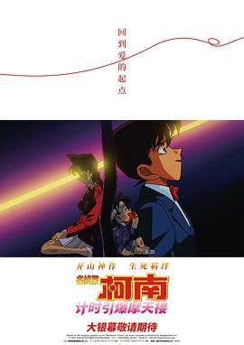

名侦探柯南：计时引爆摩天楼 / 名探偵コナン 時計じかけの摩天楼
又名：名侦探柯南：引爆摩天楼 / 名侦探柯南1997：引爆摩天楼 / 名侦探柯南：记时引爆摩天楼 / 名侦探柯南：剧场版第1部 / Detective Conan: Skyscraper on a Timer / Meitantei Konan: Tokei Jikake no Matenrou
作品信息
| 导演 | 儿玉兼嗣 |
| 编剧 | 古内一成 / 青山刚昌 |
| 主演 | 高山南 / 山口胜平 / 山崎和佳奈 / 神谷明 / 盐泽兼人 / 绪方贤一 / 茶风林 / 岩居由希子 / 高木涉 / 大谷育江 / 藤本让 / 藤城裕士 / 宫寺智子 / 藤井佳代子 / 山路和弘 / 平尾仁 / 谷川俊 / 山崎巧 / 千叶一伸 / 真山亚子 / 一条和矢 / 百百麻子 / 川谷修士 / 小堀裕之 / 野村明大 / 石田太郎 |
| 类型 | 动画 / 悬疑 |
| 制片国家/地区 | 日本 |
| 语言 | 英语 / 意大利语 / 日语 |
| 上映日期 | 2026(中国大陆) / 1997-04-19(日本) |
| 片长 | 95分钟 |
| IMDb | tt0131479 |
最后一次看到是 2026-08-12T21:13:18+08:00 · 豆瓣原页